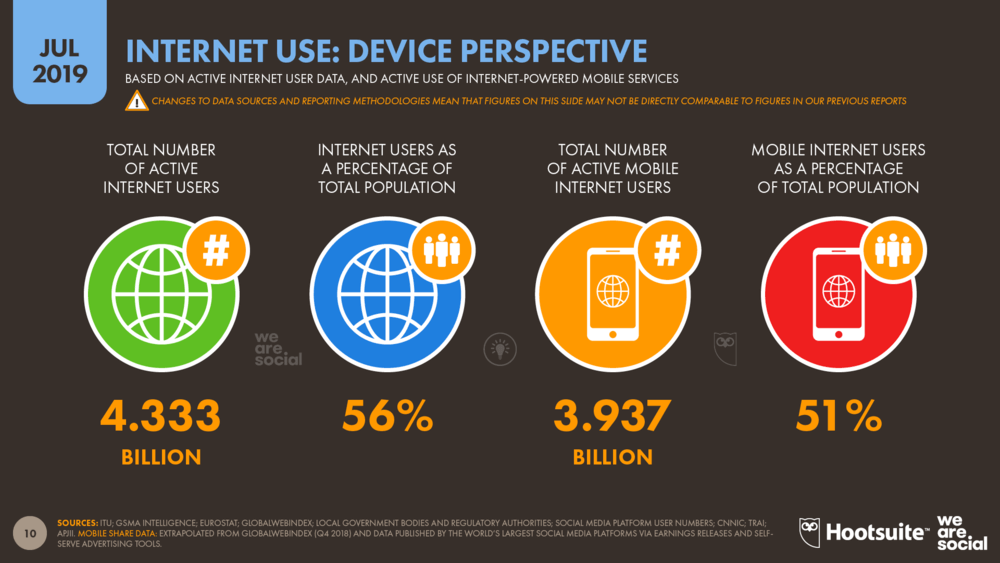
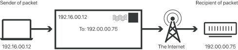
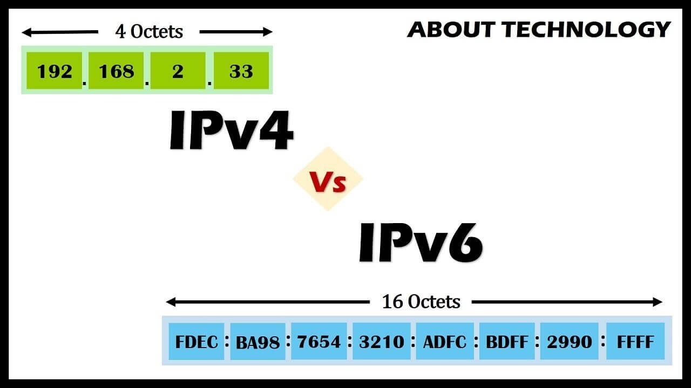

In my mind Internet is many things. It's the global computer network of networks. It's the communication infrastructure and technologies which connects billions of computers and other terminal devices and promotes and facilitates the interactive communication through text, images, sound and video. But most of all it's the people. Every day billions of people from all over the world are connected and benefit from its services to get informed, to search, to communicate, to entertain, to work, to buy goods and services. It is the hyper-medium for now and for the future. It is our collective intelligence. It is a mirror of real world and of our societies. It is for good and for evil. I hope to stay free, democratic and independent.
In general it's very complicated. But roughly we can say that Internet is a huge global intercommunication system. It composed of two main components the hardware and the protocols. It follows the architecture of client - server . Hardware includes everything from cables that carry terabits of information every second to end devices like PCs, smartphones. Other hardware is routers, servers, cell phone towers, satellites, radios, and other devices.

From the other side we have the protocols. Protocols are set of rules that machines follow to complete tasks. Only thanks to common sets of protocols the machines is possible to “understand” one another and send information in a meaningful and organized manner. Such protocols are the HTTP, the TCP/IP, DNS etc.
To be transmitted efficiently the information it is divided to packets. These packets are divided in the sender and re-assembled in turn in the recipient. They travel from node to node (usually routers) and find their way with the ip address another important factor and term.
Internet uses the telecommunication system and its infrastructure to function. End users connect to it through a device named modem and the connection always provided through an ISP Internet Service Provider (usually a big telecommunication company) which with his turn is connected to the main cables of the Internet the backbone.
Additionally, Internet is a malleable (μάλιαμπολ - plastic) system it changes in little ways as elements join and leave networks around the world. We can imagine it as a network of webs connected to each other. For this reason, we use to call it “network of networks”. After all, it was built to withstand nuclear attacks and to keep functioning even if a lot of nodes collapse.
Internet Protocol is the convention that has been agreed on, which is responsible for the communication and delivering of information between computers.
In order to make this communication work we needed this System to be able to recognise each individual computer or server. To do that we gave each computer an IP address .
Computers big:servers or small:your phone are all represented by an individual number which is called IP address. All computers have their individual number so we won’t confuse them. Until today there have been two systems that allows us make this work IPv4 and IPv6.
The Domain Name System (DNS) that consists of DNS databases that are stored in DNS servers. It translates domain names to IP addresses.
DNS request

A packet is a small about of data sent across a TCP/IP network or the Internet.
The benefits are smaller data can travel faster using multiple routes.
Sometimes a user can experience a network packet loss, resulting in poor quality data received.
Two types of Internet Protocols:
1. Transmission Control Protocol (TCP)
This is a connection-oriented protocol. A connection between a sender and receiver must be established before
data
is sent. TCP prioritises reliability of data transfer.
2. User Datagram Protocol (UDP)
This is a connectionless protocol. It allows a program to send many packets at speed which is useful in online
gaming and live broadcasting. UCP prioritises speed of data transfer and neglects incomplete data packets.
Source: Wikipedia/Hypertext_Transfer_Protocol